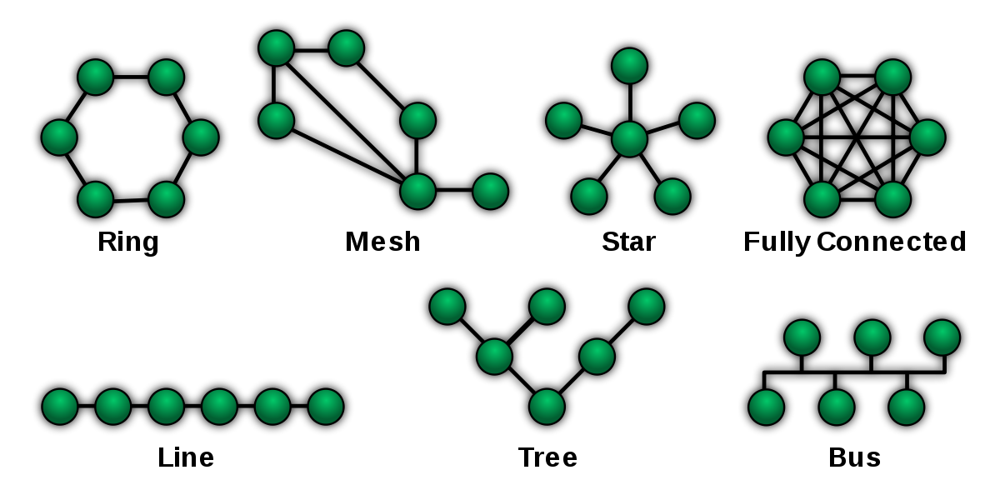

5. Počítačové sítě, hierarchie, topologie, komunikace v síti - referenční modely a standardy
ISO/OSI a TCP/IP
| ISO/OSI |
TCP/IP |
| 7 |
Aplikační |
7-5 |
Aplikační |
| 6 |
Prezentační |
| 5 |
Relační |
| 4 |
Transportní |
4 |
Transportní |
| 3 |
Síťová |
3 |
Síťová |
| 2 |
Datová |
1-2 |
Síťové rozhraní |
| 1 |
Fyzická |
Protokoly
- Aplikační - HTTP, DNS
- Transportní - TCP, UDP
- Síťová - IP, ICMP
- Síťové rozhraní - Ethernet, Wifi
Počítačová síť
- Propojení více počítačů
- Typy:
- WAN - Internet
- MAN - Města
- LAN - Domácnost
- PAN - Zařízení mezi sebou
- Zařízení:
- PC
- Switch
- Router
- Server
Peer-to-peer
- Klient a server je každý uživatel
Topologie
Fyzická
- Jak jsou zapojeny mezi sebou

Logická
- Způsob, jak řeším komunikaci
- Typy:
Principy sběrnicové topologie
- Naslouchat
-
- Detekce kolize
- Vyřešení kolize
STP - Spanning Tree Protocol
- Zajišťuje redudanci
- Root bridge
- Nejnižší MAC adresa
- Od něho povede ke každému jedna cesta
- Root port - směřuje k root bridge